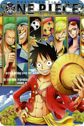

One Piece - Episode 1018

Type :
Tv
Status :
Ongoing
Studios :
Toei Animation
Duration :
24 Min.
Genres :
Action, Adventure, Fantasy
Synopsis
Gol D. Roger was known as the "Pirate King," the strongest and most infamous being to have
sailed the Grand Line. The capture and execution of Roger by the World Government brought
a change throughout the world. His last words before his death revealed the existence of the
greatest treasure in the world, One Piece. It was this revelation that brought about the Grand
Age of Pirates, men who dreamed of finding One Piece—which promises an unlimited amount
of riches and fame—and quite possibly the pinnacle of glory and the title of the Pirate King.
Gol D. Roger was known as the "Pirate King," the strongest and most infamous being to have
sailed the Grand Line. The capture and execution of Roger by the World Government brought
a change throughout the world. His last words before his death revealed the existence of the
greatest treasure in the world, One Piece. It was this revelation that brought about the Grand
Age of Pirates, men who dreamed of finding One Piece—which promises an unlimited amount
of riches and fame—and quite possibly the pinnacle of glory and the title of the Pirate King.
Popular Anime